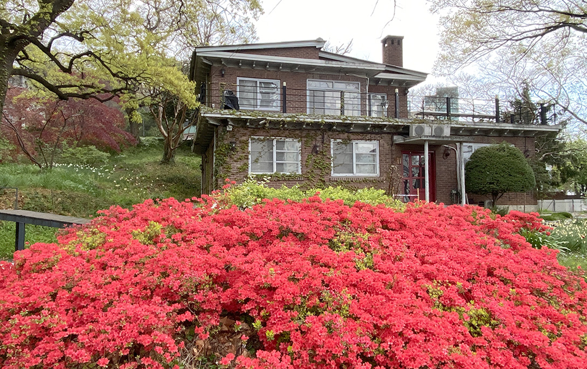
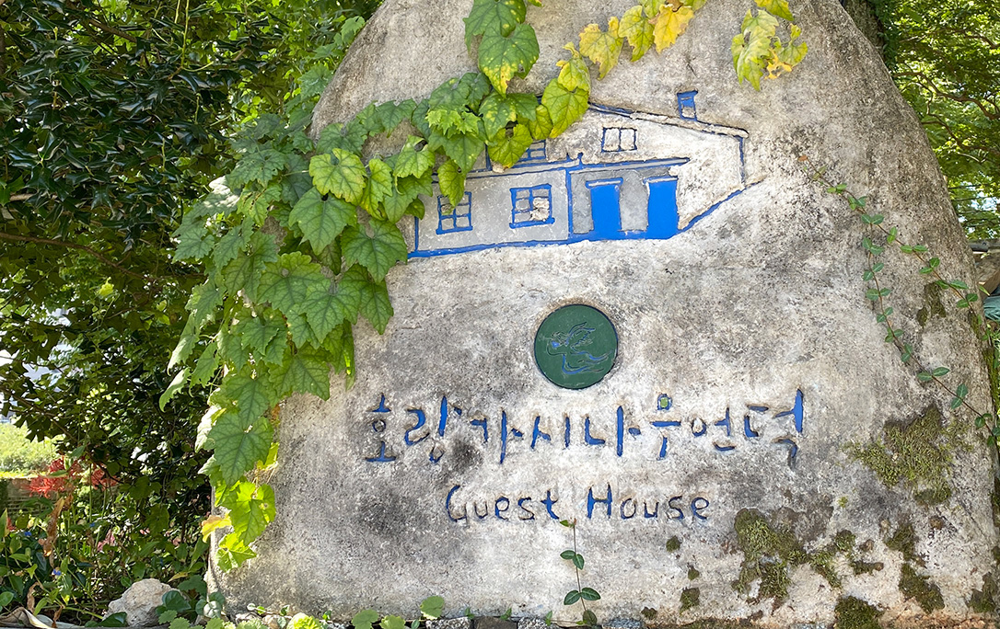
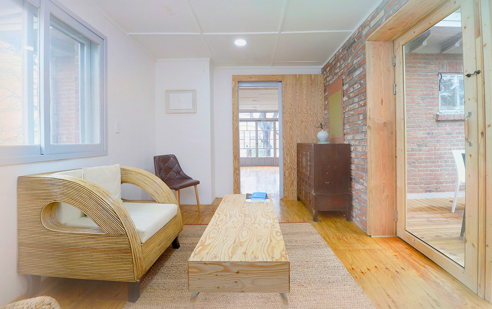
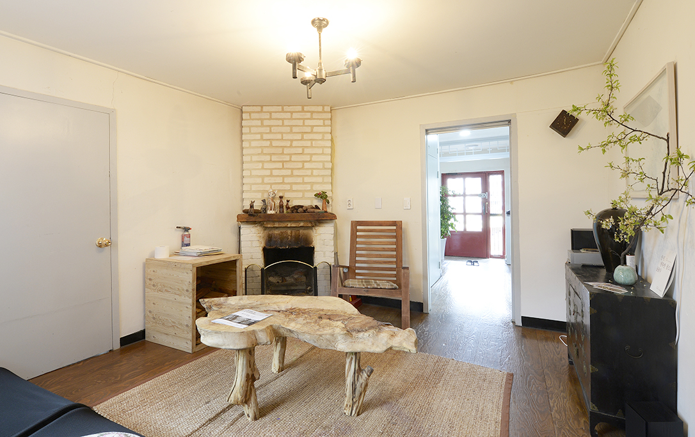
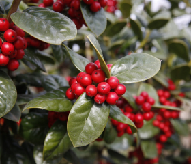
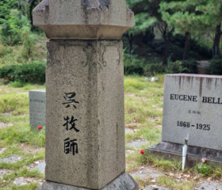
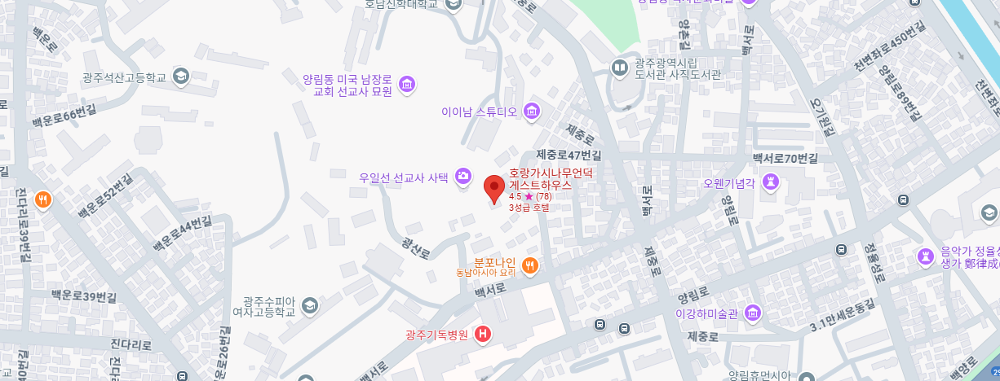

광주의 살아있는 역사와
함께 하는
호랑가시나무언덕 게스트하우스
20세기 초부터 시작된 광주의 근대역사가 살아 숨쉬는 곳,
양림동의 호랑가시나무언덕에서 여러분을 초대합니다




 가정의 행복, 평화를 기원하는 호랑가시나무
 양림 선교사 묘원
호랑가시나무언덕 게스트하우스
호남신학대에서 수피아여고로 이어지는 양림동 언덕배기는 수령 200년 이상의
호랑가시나무들이 다수 자생하고 있어서 ‘호랑가시나무 언덕’이라고도 불립니다.
언덕 중간에 위치한 뉴슈마 선교사 사택은 건축된 지 70여년이 된 적벽돌 건물로
현재 호랑가시나무언덕 게스트하우스로 사용되고 있습니다.
함께 즐길 수 있는 곳
찾아오시는 길

시외버스 이용 시
버스노선:금남55
기독병원 정류장 → 게스트하우스 (도보 10분)
버스노선 : 순환01, 진원17, 지원25, 봉선27, 문흥48, 금남59,
봉선76, 첨단95, 송정98, 화순217, 화순218, 화순218-1
양림휴먼시아2차 정류장 → 게스트하우스 (도보 30분)
지하철 이용 시
남광주역 3번 출구 → 게스트하우스 (도보 25분)
문화전당역 1, 3번 출구 → 게스트하우스 (도보 35분)